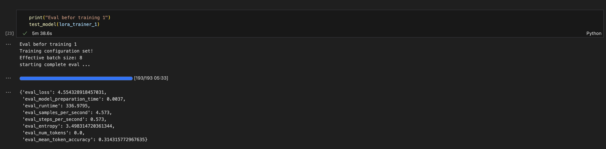

Domain Adaption Fine-Tuning with LoRA: My Experiment on Mac M1
date: 2025-09-23
üìÖ 23/09/2025
Aim of the experiment is to implement train a small LLM on new domain and prime it for that domain specific sythetic data.
LLM training haapens in two steps: 1. base model : trained on raw text for next token prediction(classic language modeling). Which is done by all language model by training on all the crawed web data. 1. instruct model : Train the base model on the further curated data where real magic happens. Like follwing instruction, multilayer chat, to make it helpful, safe, and aligned with user expectations etc . This process is known as RLHF.
Below is a basic pipeline for RLHF, taken from this excellent blog by Chip Huyen
Motivation
I work at Amdocs in the telecom domain, where a lot of knowledge is stored in Confluence pages. I wanted to explore whether a small model fine-tuned on a subset of our internal wiki could assist with internal Q&A.
Experiment Setup & Constraints
- Hardware: Mac M1 (no NVIDIA GPU, so training is on CPU/MPS backend — slower than CUDA).
- Data: Small subset of internal wiki pages. It belongs to telecom domain written in english, so no need to extend the vocabulary of the tokenizer of the model.
- Compute: Due to hardware constraints, we trained on a very small sample to validate pipeline, not to reach SOTA results.
- Goal:
- Validate that DoRA + LoRA SFT works end-to-end.
- Measure how much domain knowledge the model can absorb with few steps.
- Code: All the code for the experiment is present in the qa_sys. Follow the notebook only no propritary data is shared.
Approach
üï∑Ô∏è Data scraping from confluence
The data is stored in org’s private server. I extracted all the pages and all its child wikis using the awesome lib atlassian-python-api. It provides which provides a simple way to connect to Confluence using access token and conflunece url.
Then, I wrote a small recursive crawler (BFS style) to: 1. Fetch a page’s content. 1. Retrieve its child pages. 1. Repeat until the entire hierarchy is traversed.
For each page I used html2text lib for converting a simple webpage to markdown dump as well as few clean ups like comments attributes for simplicity. Fetched around 4654 pages.
This gives a structural raw text to be used for training base model.
üèóÔ∏è Building Synthetic Data
Synthetic Data Kit: I used Meta’s synthetic-data kit to generate question–answer pairs from each page.Role-based Diversity : To make the dataset more robust, I instructed the model to generate Q&A pairs from the perspective of four roles:
- BA (Business Analyst) – business rules, compliance, ROI.
- SA (System Analyst) – workflows, dependencies, data flows.
- DEV (Developer) – API inputs/outputs, error handling, edge cases.
- QA (Tester) – test cases, edge cases, validation.
The SDK was configured to use
openai/gpt-oss-20b, running locally viaLM Studioon my Mac M1.Focus on Speed :
- I only ran the create step of the SDK (no curation) to minimize generation time on Mac hardware.
- This meant I directly collected the generated Q&A without additional filtering.
Prompt : Below is the exact prompt I used to generate Q&A pairs using SDK: ```yml qa_generation: | You are a synthetic data generator for API and business process documentation. The input is a document describing one or more processes, APIs, or business requirements.
Instructions:
- Automatically identify the document title from the content.
- Use the inferred title naturally in every question and answer.
- If no clear title exists, you may use the filename without extension as the title.
- Generate question-and-answer pairs for the following roles:
- Business Analyst (BA): focus on requirements, stakeholder value, business rules, process optimization, compliance, risk, and ROI.
- System Analyst / Software Analyst (SA): focus on system interactions, workflow, dependencies, data flows, and integration points.
- Developer (DEV): focus on inputs, outputs, API parameters, request/response examples, error handling, and implementation considerations.
- QA / Tester (QA): focus on test cases, edge cases, validation, error scenarios, and business rule verification. - Each question and answer must refer to the inferred title naturally. Example: - Question: “For the
User Management process, what are the steps and required inputs?” - Answer: “TheUser Management processrequires two APIs:GET tokenfor authentication andPUT ManageUserfor updating user details.” - Only generate Q&A from the provided content; do not invent information.
- If the document contains only links or very little meaningful content, output an empty array
[]. - Ensure questions and answers are clear, self-contained, and unambiguous.
- Avoid duplicate questions.
- Generate at least one Q&A per role if information allows.
- Each question and answer must integrate the inferred title naturally.
- Do not infer or invent details not present in the document. If unclear, omit the Q&A for that role.
- If the document is processed in chunks, ensure Q&A is relevant only to the current chunk.
- Extract all high qualities Q&A pairs possible, up to the 5 per role.
- Think hard before generation
**Output format:** [ {{ "title": "inferred_document_title", "role": "BA", "question": "...", "answer": "..." }}, {{ "title": "inferred_document_title", "role": "SA", "question": "...", "answer": "..." }}, {{ "title": "inferred_document_title", "role": "DEV", "question": "...", "answer": "..." }}, {{ "title": "inferred_document_title", "role": "QA", "question": "...", "answer": "..." }} ] Text: {text}- Automatically identify the document title from the content.
Execution time: The complete generation took around couple of days.
üõ†Ô∏è Domain adaption LoRA of base model
- Model Choice:
For speed and performance on my Mac M1, I used
google/gemma-3-270m.Downloaded using Hugging Face transformers (both model & tokenizer).
- Context Window:
- Used a context length of 512 tokens with an overlap of 128 tokens to preserve context across chunks.
- Total tokens to be processed: 4,302,414.
- LoRA Configuration:
- Targeted only the attention block’s linear modules: q_proj, k_proj, v_proj.
- Used rank = 16, lora_alpha = 32 for a good balance of capacity and speed.
- bias was not selected and drop out is set to 0.1
- Train/Validation Split:
- Data was split 95:5 into train and validation sets.
- Baseline Perplexity:
- It is measured how well a language model predicts the next token in a seqence
- Calculated by finding conditional probabilty of next token wrt past tokens
- Lower perplexity indicates the model has learned the input distribution better — it is “less surprised” by the text.
- On-domain (wiki text): 35.87
- Out-of-domain (Wikipedia text): 52.28
- Out-of-domain evaluation was used to check for catastrophic forgetting during fine-tuning.
- Training hyperparams:
as all the inputs are of shpae 512
below are the params
py batch_size = 4 gradient_accumulation_steps = 2 # keeping it low for not overflowing learning_rate=1e-4 # an baseline learning_rate suggested by lora paper num_train_epochs=3other hyper params are as follows:
- Loss landsscape:
- used
trackiofor tracking as keeping in the spirit of running in local - The loss graph is gradual as below.
<div style="flex: 1; text-align: center;"> <img src="./static/blog3/base_train_loss.png" alt="Training Loss" width="600"> <p>Training Loss</p> </div> <div style="flex: 1; text-align: center;"> <img src="./static/blog3/base_eval_loss.png" alt="Evaluation Loss" width="600"> <p>Evaluation Loss</p> </div>
- used
- Results After Fine-Tuning:
- On-domain perplexity improved to 4.19 üéâ
- Out-of-domain perplexity improved slightly to 40.64 (no significant forgetting).
- Saving model:
- Combine the LoRA adapters with the base model to produce a single, unified model.
- Save the model and tokenizer for further processing
- Vibe check:
the trained model is learning from the business wiki
below is the inference
⚡ Further SFT on base model
Message Templete: For each question and answer pairs below is the input text.
py SYSTEM_PROMPT = 'You are a senior software developer. Answer truthfully and concisely.\nIf unsure, reply "I do not know." Explain steps briefly when needed.' message = [ {"role": "system", "content": SYSTEM_PROMPT}, {"role": "user", "content": example['question']}, {"role": "assistant", "content": example['answer']} ]Context Window:
- Aim to find an appropriate context length is key. Too short the model misses to learn, too long adds unnecessary padding, wasting memory and computation.
- As a rule of thumb selecting context window of 512 is idle for the formatted text. As it a whole no of power 2 to make GPU computational efficiently.
LoRA Configuration:
- For simplicity choosing same LoRA as base model.
Train/Validation Split:
- Data was split 95:0.4:5 into train:valid:test sets. Smaller valid set for faster training.
- Test set is not used during training
Baseline Entropy and Mean Token Accuracy:
Entropy measures the model’s uncertainty — lower entropy after SFT means the model is more confident about predicting the next token.
Mean Token Accuracy tracks how often the model predicts the correct next token, and should increase after SFT, showing better alignment with domain data.
HF wiki refenece

Training hyperparams:
below are the params
py batch_size = 8 # for faster training and many input are below 100 tokens gradient_accumulation_steps = 4 learning_rate=1e-4 # stable learning rate max_length=512 num_train_epochs=1 # increaing the epochs more than 1 leads to explosion of loss, and over flowing of loss logging_steps, eval_steps, save_steps = 50, 50, 50other hyper params are as follows:
Loss landsscape:
- The loss graph is gradual as below.
<div style="flex: 1; text-align: center;"> <img src="./static/blog3/SFT_train_loss.png" alt="Training Loss" width="600"> <p>Training Loss</p> </div> <div style="flex: 1; text-align: center;"> <img src="./static/blog3/SFT_eval_loss.png" alt="Evaluation Loss" width="600"> <p>Evaluation Loss</p> </div>
- The loss graph is gradual as below.
Results After Fine-Tuning:
After training the Entropy decresed to 2.44 and Mean Token Accuracy is improved to 57% üéâ
Saving model:
- followed same approcah as base model
Vibe check:
the trained model is learning from the business wiki
below is the a sample QA
Conclusion
In this experiment, I built a complete pipeline: scraping domain data from Confluence, generating synthetic Q&A data, and performing continual pretraining followed by SFT. The model showed decent results but still hallucinates and sometimes produces irrelevant text — a clear signal that further refinement is needed. No efficent packing and speed up is not able to achived as training on Mac is painfully slow wrt Nvidia gpu.
Key takeaways and next steps:
- Improve data diversity: As data is generated by a LLM, the performance will improve after adding more sythtic data and some real world opensource data for generalization.
- Use multiple LLMs for generation: Include multiple LLM for synthetic data generation which will give raises to more entropy of information
- Experiment with larger base models: Using bigger model for having grater knowledge absorption
- Tune LoRA configs and hyperparameters: Having differenet configs for LoRA ranks and other hyper params in base model wihich will lead to storong adaption of source raw text.
- Building scheduler for SFT: The SFT triner fails dramtically when running with a decent lower lr i.e. 5e-5. To faster convergenece we have to use higher learning rate so that the model will not be stuck around local minima or saddle point.
- Eval : a concrete pipeline for evalution of the trained model.